실내건축기사(구) (2017-09-23 기출문제)
1과목: 실내디자인론
1. 조명 연출 기법 중 실루엣(silhouette) 기법에 관한 설명으로 옳은 것은?
- 물체의 형상만을 강조하는 기법으로 시각적인 눈부심이 없다.
- 빛의 각도를 이용하는 기법으로 벽면 마감재료의 재질감을 강조시킨다.
- 물체를 강조하기 위해 사용되는 기법으로 하이라이팅(high lighting)이라고도 한다.
- 강조하고자 하는 물체에 의도적인 광선으로 조사시킴으로써 광선 그 자체가 시각적인 특성을 지니게 하는 기법이다.
(정답률: 81%)

2. 황금비례에 관한 설명으로 옳지 않은 것은?
- 1 : 1.618의 비율이다.
- 고대 로마인들이 창안했다.
- 몬드리안의 작품에서 예를 들 수 있다.
- 건축물과 조각 등에 이용된 기하학적 분할 방식이다.
(정답률: 74%)
3. 사무소 건축에서 엘리베이터 배치에 관한 설명으로 옳지 않은 것은?
- 교통동선의 중심에 설치하여 보행거리가 짧도록 배치한다.
- 대면배치 시 대면거리는 동일 군 관리의 경우는 3.5~4.5m로 한다.
- 여러 대의 엘리베이터를 설치하는 경우, 그룹별배치와 군 관리 운전방식으로 한다.
- 일렬 배치는 8대를 한도로 하고, 엘리베이터 중심 간거리는 8m 이하가 되도록 한다.
(정답률: 77%)
4. 디자인 원리 중 점이(gradation)에 관한 설명으로 가장 알맞은 것은?
- 서로 다른 요소들 사이에서 평형을 이루는 상태
- 공간, 형태, 색상 등의 점차적인 변화로 생기는 리듬
- 이질의 각 구성요소들이 전체로서 동일한 이미지를 갖게 하는 것
- 시각적 형식이나 한정된 공간 안에서 하나 이상의 형이나 형태 등이 단위로 계속 되풀이 되는 것
(정답률: 85%)
5. 다음 중 연색성이 가장 우수한 것은?
- 할로겐전구
- 고압수은램프
- 고압나트륨램프
- 메탈핼라이드램프
(정답률: 75%)
6. 건축화 조명 중 밸런스(balance) 조명에 관한 설명으로 옳지 않은 것은?
- 창이나 벽의 커튼 상부에 부설된 조명이다.
- 하향조명일 경우 벽이나 커튼을 강조하는 역할을 한다.
- 천장고가 높지 않을 경우 상향조명만 사용 하는 것이 좋다.
- 상향조명일 경우 천장에 반사하는 간접조명으로 전체 조명 역할을 한다.
(정답률: 61%)
7. 다음 중 공간의 레이아웃에 관한 설명으로 가장 알맞은 것은?
- 조형적 아름다움을 부각하는 작업이다.
- 생활행위를 분석해서 분류하는 작업이다.
- 공간에서의 이동패턴을 계획하는 동선계획이다.
- 공간을 형성하는 부분과 설치되는 물체의 평면상 배치계획이다.
(정답률: 73%)
8. 상점의 동선계획에 관한 설명으로 옳지 않은 것은?
- 고객 동선과 종업원 동선은 서로 교차되지 않도록 한다.
- 고객 동선은 가능한 짧게 하여 쇼핑으로 인한 피로도를 적게 한다.
- 고객 동선과 종업원 동선이 만나는 곳에 카운터나 쇼케이스를 배치하는 것이 좋다.
- 상품 동선은 관리 동선이라고도 하며 상품의 반입, 보관, 포장, 발송 등이 이루어지는 동선이다.
(정답률: 87%)
9. 공동주택의 평면형식에 관한 설명으로 옳지 않은 것은?
- 계단실형은 거주의 프라이버시가 높다.
- 중복도형은 엘리베이터 이용 효율이 높다.
- 편복도형은 거주성이 균일한 배치구성이 가능하다.
- 집중형은 대지의 이용률은 낮으나 대규모 세대의 집중적 배치가 가능하다.
(정답률: 65%)
10. 전시공간의 순회형식 중 중앙홀 형식에 관한 설명으로 옳은 것은?
- 대지 이용률이 낮아 소규모 전시공간에 주로 사용된다.
- 중앙홀이 크면 동선의 혼잡이 없으나 장래의 확장에 무리가 따른다.
- 직사각형 또는 다각형 평면의 전시실이 연속적으로 연결된 형식이다.
- 중앙의 중정이나 오픈 스페이스를 중심으로 형성된 복도를 따라 각 실이 배치된다.
(정답률: 61%)
11. 다음 설명에 알맞은 주택 부엌가구의 배치 유형은?
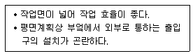
- 일렬형
- ㄷ자형
- 병렬형
- ㄱ자형
(정답률: 84%)
12. 실내공간을 구성하는 요소에 관한 설명으로 옳지 않은 것은?
- 상승된 바닥은 다른 부분보다 중요한 공간이라는 것을 나타낸다.
- 벽과 천장은 시대와 양식에 의한 변화가 현저한데 비해 천장은 매우 고정적이다.
- 벽, 문틀, 문과의 관계에서 색상은 실내분위기연출에 영향을 주는 중요한 요소가 된다.
- 벽의 높이가 가슴 정도이면 주변공간에 시각적연속성을 주면서도 특정 공간을 감싸주는 느낌을 준다.
(정답률: 79%)
13. 상점의 가구 배치에 따른 평면 유형 중 직렬형에 관한 설명으로 옳지 않은 것은?
- 부분별로 상품 진열이 용이하다.
- 협소한 매장에서는 적용이 곤란하다.
- 쇼 케이스를 일직선 형태로 배열한 형식이다.
- 상품의 전달 및 고객의 동선상 흐름이 빠르다.
(정답률: 75%)
14. 실내구성요소 중 문에 관한 설명으로 옳지 않은 것은?
- 실내에서의 문의 위치는 내부공간에서의 동선을 결정한다.
- 사람이 출입하는 문의 폭은 일반적으로 900mm 정도이다.
- 문의 치수는 기본적으로 사람의 출입을 기준으로 결정된다.
- 여닫이문은 문틀의 홈으로 2~4개의 문이 미끄러져 닫히는 문으로 일반적으로 슬라이딩 도어라고 한다.
(정답률: 78%)
15. 단독주택의 거실에 관한 설명으로 옳지 않은 것은?
- 현관과 직접 면하도록 배치하는 것이 좋다.
- 식당, 부엌과 가까운 곳에 배치하는 것이 좋다.
- 평면의 한 쪽 끝에 배치할 경우 통로의 면적 증대의 우려가 있다.
- 거실의 규모는 가족수, 가족구성, 전체 주택의 규모 등에 따라 결정된다.
(정답률: 74%)
16. 실내디자인에 관한 설명으로 옳은 것은?
- 사회의 다원화와 더불어 공간의 질적, 양적 향상이 필요하지만 대중성은 중요하지 않다.
- 실내공간은 인위적인 공간이므로 정서적 분위기를 수용하는 디자인은 중요한 요소가 아니다.
- 상업공간 디자인은 수익성을 위한 실내 공간 창출이 가장 중요한 가치이나 다른 요소도 고려한다.
- 실내공간은 목적에 따라 기능성, 수익성, 심미성 등으로 구분할 수 있으며 명확한 구분이 항상 가능하다.
(정답률: 79%)
17. 다음 중 점의 집합, 분리의 효과를 가장 잘 나타낸것은?
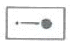
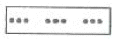
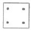
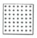
(정답률: 86%)
18. 추상적 형태에 관한 설명으로 옳은 것은?
- 순수형태 또는 상징적 형태라고도 한다.
- 기하학적으로 취급되는 점, 선, 면, 입체 등이 속한다.
- 구체적 형태를 생략 또는 과장의 과정을 거쳐 재구성한 형태이다.
- 인간에 의해 인위적으로 만들어진 모든 사물, 구조체에서 볼 수 있는 형태이다.
(정답률: 52%)
19. 의자의 종류 중 필요에 따라 이동시켜 사용할 수 있는 간이의자로 크지 않으며 가벼운 느낌의 형태를 갖는 것은?
- 카우치
- 풀업 체어
- 체스터필드
- 라운지 체어
(정답률: 83%)
20. 다음 설명에 알맞은 사무소 건축의 코어 유형은?
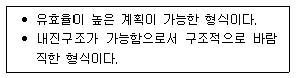
- 편심코어형
- 독립코어형
- 중심코어형
- 양단코어형
(정답률: 65%)
2과목: 색채학
21. 다음 중 가장 딱딱한 느낌의 색은?
- 녹색을 띤 명도가 높은 색
- 황색을 띤 채도가 낮은 색
- 청색을 띤 명도가 낮은 색
- 황색을 띤 명도가 높은 색
(정답률: 78%)
22. 신인상파 화가들의 점묘화 기법과 관련이 있는 것은?
- 계시 혼합
- 감산 혼합
- 회전 혼합
- 병치 혼합
(정답률: 76%)
23. 빨강(Red)과 초록(Green)을 가산혼합하면 무슨색이 되는가?
- 검정
- 파랑
- 노랑
- 흰색
(정답률: 75%)
24. CIE(국제조명위원회)에서 규정한 표준광(光) 중 맑은 하늘의 평균 낮 광선을 대표하는 광원은?
- 표준광 A
- 표준광 D
- 표준광 C
- 표준광 B
(정답률: 58%)
25. 다음 배색 중 인접색의 조화에 가장 가까운 것은?
- 연두-보라-빨강
- 주황-청록-자주
- 빨강-파랑-노랑
- 자주-보라-남색
(정답률: 82%)
26. 터널의 출입구 부근에 조명이 집중되어 있고 중심부로 갈수록 조명수가 적은 것은 어떤 순응을 고려한 것인가?
- 명순응
- 암순응
- 색순응
- 무채순응
(정답률: 84%)
27. 다음 중 색입체에 관한 설명으로 틀린 것은?
- 색의 3속성을 3차원 공간에 계통적으로 배열한 것이다.
- 오스트발트 색체계의 색입체는 원형이다.
- 먼셀 색체계의 색입체는 나무의 형태를 닮아 color tree 라고 한다.
- 색입체의 중심축은 무채색 축이다.
(정답률: 74%)
28. 다음 중 혼색계에 대한 설명으로 틀린 것은?
- 물리적인 변색이 일어나지 않는다.
- 색표계로 변환이 가능하며 오차를 적용할 수 있다.
- 광원의 영향에 따라 다르게 지각 될 수 있다.
- 측색기로 측색하여 출력된 데이터의 수치나 좌표로 표현한다.
(정답률: 43%)
29. 잔상에 관한 설명 중 틀린 것은?
- 색의 자극이 없어지고 잠시 지나면 그 상이 나타나는 것을 잔상이라 한다.
- 잔상이 원래의 색자극과 같은 색상일 때 이를 음성잔상이라 한다.
- 수술실의 벽면을 녹색으로 처리하는 것은 잔상 현상때문이다.
- 물체색에 있어서 잔상은 거의 원래 색과 보색관계에 있는 색으로 나타난다.
(정답률: 73%)
30. 조명등과 연색성에 관한 설명 중 틀린 것은?
- 청색은 백열등에서 약간 녹색을 띤다.
- 청색은 형광등에서 크게 변하지 않는다.
- 나트륨등에서는 빨강이 강조된다.
- 빨강은 백열등에서 더욱 선명하다.
(정답률: 53%)
31. 복잡한 가운데 질서의 요소를 미(美)의 기준으로 보고, 색의 3속성을 고려한 독자적인 색공간을 가정하여 조화관계를 주장한 사람은?
- Ostwald
- Munsell
- Moon ㆍ Spencer
- Birren
(정답률: 69%)
32. 다음 중 파장이 가장 짧은 색은?
- 노랑
- 빨강
- 보라
- 파랑
(정답률: 65%)
33. 다음 중 교통 표지판에 주로 이용된 시각적 성질은?
- 명시성
- 심미성
- 반사성
- 편의성
(정답률: 83%)
34. 오스트발트의 등색상 삼각형에 있어서 등백색계열을 나타내는 것은?
- pl - pi –pg
- la - na - pa
- nl - ni –pi
- lg - ni - pl
(정답률: 69%)
35. 색채학자 저드(D. B. Judd)의 일반적인 4가지 섹채조화의 원리가 아닌 것은?
- 유사성의 원리
- 명료성의 원리
- 대비성의 원리
- 친근성의 원리
(정답률: 55%)
36. 색채 계획을 세우기 위하여 어떤 연구 단계를 거치는 것이 좋은가?
- 색채환경분석 →색채전달계획 →색채심리분석 →디자인 적용
- 색채전달계획 →색채환경분석 →색채심리분석 →디자인 적용
- 색채환경분석 →색채심리분석 →색채전달계획 →디자인 적용
- 색채심리분석 →색채환경분석 →색채전달계획 →디자인 적용
(정답률: 71%)
37. 다음 색의 혼합 결과 가장 큰 탁색은?
- 흰색 + 순색
- 회색 + 순색
- 명청색 + 순색
- 청색 + 순색
(정답률: 72%)
38. 다음 중 청록색과 맞는 이름이나 기호는 무엇인가?(오류 신고가 접수된 문제입니다. 반드시 정답과 해설을 확인하시기 바랍니다.)
- 6YR 5/6
- 7.5G 5/4.5
- Cyan
- Orange
(정답률: 62%)
39. 비렌의 색채조화론 중 순색과 흰색의 조화로 이루어지는 용어는?
- TINT
- SHADE
- TONE
- GRAY
(정답률: 68%)
40. 디지털 색채 체계에 대한 설명 중 옳은 것은?
- RGB 색공간에서 각 색의 값은 0~100%로 표기한다.
- RGB 색공간에서 모든 원색을 혼합하면 검정색이 된다.
- L*a*b* 색공간에서 L*은 명도를, a*는 빨강과 초록을, b*는 노랑과 파랑을 나타낸다.
- CMYK 색공간은 RGB 색공간보다 컬러의 범위가 넓어 RGB 데이터를 CMYK 데이터로 변환하면 컬러가 밝아진다.
(정답률: 64%)
3과목: 인간공학
41. 동작경제원칙 중 신체 사용에 관한 원칙에 해당하는 것은?
- 공구의 기능을 결합하여 사용하도록 한다.
- 모든 공구나 재료는 정위치에 있도록 한다.
- 가능한다면 쉽고도 자연스러운 리듬이 생기도록 동작을 배치한다.
- 공구나 재료는 작업동작이 원활하게 수행되도록 위치를 정해 준다.
(정답률: 59%)
42. 소음을 통제하는 방법으로 적절하지 않은 것은?
- 귀마개를 착용한다.
- 소음원을 격리시킨다.
- 소음원의 설비를 적절하게 배치한다.
- 훈련을 통하여 적응력을 향상시킨다.
(정답률: 72%)
43. 인간의 적합, 적응, 순응, 피로상태를 형태, 생리, 운동, 심리 등의 관점에서 연구하는 방법은?
- 반응 조사법
- 제품 분석법
- 직접적 관찰법
- 라이프 스타일(Life style) 분석법
(정답률: 54%)
44. 인체 골격의 주요 기능으로 볼 수 없는 것은?
- 몸을 지탱하여 그 외형을 지지한다.
- 골격 내부의 골수는 조혈작용을 한다.
- 체형을 유지하며 신경신호를 전달한다.
- 골격근의 기동적 수축에 따라 운동을 한다.
(정답률: 58%)
45. 제어장치 위치의 인간공학적 설계에 관한 설명으로 틀린 것은?
- 크랭크(crank)는 회전축이 신체 전면에서 60~92°가 좋다.
- 앉아있을 때는 어깨의 높이에서 잡을 때 가장 큰 힘이 작용한다.
- 작업원의 중심선보다는 좌∙우 어느 쪽으로든 쏠리는 것이 좋다.
- 힘을 요하는 크랭크(crank)의 축은 신체전면과 평행일 때 좋다.
(정답률: 47%)
46. 소요조명을 구하는 식으로 맞는 것은?
- 조도(lux)/반사율(%)
- 조도×면적/반사율(%)
- 면적×감광보상률/반사율(%)
- 소요광속발산도(fL)/반사율(%)
(정답률: 40%)
47. 인간의 눈과 카메라의 구조를 유사한 기능으로 비교할 때, 연결이 잘못된 것은?
- 홍채 - 셔터
- 동공 - 조리개
- 망막 - 필름
- 수정체 - 렌즈
(정답률: 74%)
48. 글자의 디자인에 관한 설명 중 틀린 것은?
- 조도가 높을수록 흰 모양이 검은 배경으로 더욱 번져 보인다.
- 검은 바탕에 흰 글자의 획폭이 반대의 경우보다 가늘어야 한다.
- 글자의 색에 따라 최적 획폭비가 다른 것은 광삼현상(irradiation) 때문이다.
- 일련의 글자가 서로 멀리 떨어져서 의미를 알아차릴수 없을 때는 높이보다는 폭을 기준으로 디자인해야 한다.
(정답률: 43%)
49. 팔꿈치를 굽히는 동작과 같이 관절이 만드는 각도가 감소하는 신체 부분의 동작을 무엇이라 하는가?
- 굴곡(flexion)
- 신전(extension)
- 내전(adduction)
- 외전(abduction)
(정답률: 57%)
50. 온열요소에 해당하지 않는 것은?
- 전도
- 기온
- 기류
- 복사열
(정답률: 64%)
51. 인간이 감지할 수 있는 주파수의 범위는?
- 1~10000 Hz
- 20~20000 Hz
- 1~30000 Hz
- 4000~20000 Hz
(정답률: 73%)
52. 소리를 구성하는 3요소가 아닌 것은?
- 진폭
- 진동수
- 파형
- 가청최소음
(정답률: 71%)
53. 조도의 단위로 맞는 것은?
- nit
- lumen/m2
- cd/m2
- lambert(L)
(정답률: 57%)
54. Gestalt 법칙을 설명한 내용 중 틀린 것은?
- Gestalt는 형, 형태를 의미하는 독일어에서 유래 되었다.
- 지각에 있어서의 분리(segregation)를 규정하는 요인을 도출하는 법칙이다.
- 다양한 내용에서 각자 다른 원리를 표현하고자 하는것의 이론화 작업이다.
- 최대 질서의 법칙으로서 분절된 Gestalt 마다의 어떤질서를 가지는 것을 의미한다.
(정답률: 50%)
55. 시각표시에서 명도와 채도 관계를 설명한 것으로 가장 적합한 것은?
- 광택이나 반사력이 높은 금속재료를 글자나 바탕재료로 사용한다.
- 정상적인 조명상태에서는 진한 바탕에 밝은 색의 글씨를 사용한다.
- 보는 이가 어둠에 익숙해져야만 하는 상황에서는 밝은 바탕에 밝은색의 글씨를 사용한다.
- 가장 읽기 쉽게 하기 위해서는 글자 혹은 숫자가 놓여 있는 바탕과의 색상대비가 적절해야 한다.
(정답률: 66%)
56. 다음 그림의 각각 중앙의 각도는 같은데, B그림의 각도가 A그림의 각도보다 작게 보이는 착시 현상은?(오류 신고가 접수된 문제입니다. 반드시 정답과 해설을 확인하시기 바랍니다.)
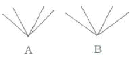
- 대비착시
- 분할착시
- 방향착시
- 각도착시
(정답률: 42%)
57. 백분위(퍼센타일)에 관한 사항으로, 적용되는 예와 사용하는 백분위수가 잘못된 것은?
- 문의 높이 - 95퍼센타일
- 시내버스의 천정높이 - 95퍼센타일
- 좌식방에서의 창턱높이 - 95퍼센타일
- 운동경기장 맨 앞자리 스텐드 난간높이 - 5퍼센타일
(정답률: 59%)
58. 어떠한 찌그러진 동전이 앞면이 나올 확률은 0.9, 뒷면이 나올 확률은 0.1 이면, 이 동전이 주는 정보량은 얼마인가?
- 0.9 bits
- 0.15 bits
- 0.32 bits
- 0.47 bits
(정답률: 34%)
59. 시각적 표시장치의 지침 설계 요령으로 가장 적절한 것은?
- 끝이 부드러운 지침을 사용하여 안정감을 높인다.
- 원형 눈금의 경우 지침의 색은 선단의 끝에만 칠한다.
- 지침의 끝은 작은 눈금과 맞닿되 겹치지는 않게 한다.
- 정확한 가독을 위하여 지침은 눈금면과 가능한 한 분리시킨다.
(정답률: 73%)
60. 동일한 무게의 중량물을 취급할 때, 가장 많은 에너지소비량(산소소비량)이 필요한 방법은?
- 등을 이용하는 방법
- 양손을 이용하는 방법
- 배낭을 이용하는 방법
- 목도를 이용하는 방법
(정답률: 79%)
4과목: 건축재료
61. 방수공사에서 쓰이는 아스팔트의 양부를 판별하는 성질과 가장 거리가 먼 것은?
- 침입도
- 신율
- 마모도
- 연화점
(정답률: 41%)
62. 목재제품 중 강당, 집회장 등의 음향조절용 및 일반건물의 벽 수장재로 사용되는 대표적인 것은?
- 코르크판
- 코펜하겐 리브판
- 경질섬유판
- 샌드위치 판넬
(정답률: 62%)
63. 점토제품으로 화강암보다 내화성이 강하고 대리석보다 풍화에 강하므로 주로 건축물의 파라펫, 주두 등의 외부장식에 사용되는 것은?
- 클링커타일
- 테라코타
- 테라조
- 내화벽돌
(정답률: 71%)
64. 할렬인장강도시험에서 재하 하중이 120kN에서 파괴된 지름 100mm, 길이 200mm인 콘크리트 시험체의 인장강도는?
- 약 2.0 MPa
- 약 2.4 MPa
- 약 3.0 MPa
- 약 3.8 MPa
(정답률: 26%)
65. 재료에 하중이 반복하여 작용할 때 정적강도보다 낮은 강도에서 파괴되는 것을 무엇이라고 하는가?
- 크리프파괴
- 전단파괴
- 피로파괴
- 충격파괴
(정답률: 64%)
66. 비철금속 중 알루미늄 재료에 대한 설명으로 옳은 것은?
- 알루미늄은 독특한 흰 광택을 지닌 중금속으로 광선 및 열 반사율이 크다.
- 산이나 알칼리 및 해수에 침식되기 쉬우므로 해안가 공사 시 특히 주의해야 한다.
- 순도가 높은 것은 표면에 산화피막이 생겨 잘 부식된다.
- 연성, 전성이 나빠서 가공하기 어렵고 얇은 부재로 만들기도 어렵다.
(정답률: 58%)
67. 미장재료 중 간수(MgCl2)와 혼합하여 응결 경화성이 생기는 것은?
- 킨스 시멘트
- 소석고
- 소석회
- 마그네시아 시멘트
(정답률: 52%)
68. 보통포틀랜드 시멘트의 주성분 중 함유량이 가장 적은 것은?
- SiO2
- CaO
- Al2O3
- Fe2O3
(정답률: 46%)
69. 금속의 부식방지를 위한 관리대책으로 볼 수 없는 것은?
- 표면을 평활하고 깨끗이 하며 가능한 한 습윤상태를 유지할 것
- 가능한 한 이종 금속을 인접 또는 접촉시켜 사용하지 말 것
- 부분적으로 녹이 나면 즉시 제거할 것
- 큰 변형을 준 것은 가능한 한 풀림하여 사용할 것
(정답률: 71%)
70. 단열재료에 관한 설명으로 옳지 않은 것은?
- 열전도율이 높을수록 단열성능이 좋다.
- 같은 두께인 경우 경량재료인 편이 단열에 더 효과적 이다.
- 일반적으로 다공질의 재료가 많다.
- 단열재료의 대부분은 흡음성도 우수하므로 흡음재료로서도 이용된다.
(정답률: 73%)
71. 소성 점토벽돌의 붉은색을 결정하는 가장 중요한 요소는?
- 구리
- 산화철
- 아연
- 니켈
(정답률: 78%)
72. 합성수지 도료를 유성페인트 및 바니시와 비교한 설명으로 옳지 않은 것은?
- 방화성이 부족하다.
- 내산, 내알칼리성이 있어 콘크리트나 플라스터면에 바를 수 있다.
- 투명한 합성수지를 사용하면 극히 선명한 색을 낼 수 있다.
- 건조시간이 빠르고 도막이 단단하다.
(정답률: 48%)
73. 넓은 의미에서 안전유리로 볼 수 없는 것은?
- 망입유리
- 접합유리
- 형판유리
- 강화유리
(정답률: 73%)
74. 석재의 성인에 의한 분류 중 화성암에 속하지 않는 것은?
- 화강암
- 안산암
- 응회암
- 현무암
(정답률: 69%)
75. 석탄을 235~315°C에서 고온건조하여 얻은 타르제품으로서 독성이 적고 자극적인 냄새가 있는 유성 목재 방부제는?
- 크레오소트유
- 펜타클로로페놀(PCP)
- 플로오르화나트륨
- 콜타르
(정답률: 63%)
76. 미장재료 중 무수축으로 경화되며 화재발생 시 결합수가 분해되어 열을 흡수하기 때문에 내화성을 나타내는 것은?
- 시멘트 모르타르
- 석고 플라스터
- 돌로마이트 플라스터
- 마그네시아 시멘트 바름
(정답률: 45%)
77. 시멘트에 관한 설명으로 옳은 것은?
- 시멘트가 풍화하면 응결이 빨라지지만, 경화후의 강도가 저하된다.
- 시멘트 응결은 첨가된 석고의 질과 양에 큰 영향을 받지 않는다.
- 시멘트의 분말도가 크고 온도가 높을수록 응결은 늦어진다.
- 시멘트 수화열의 발열량은 시멘트의 종류, 화학조성, 물시멘트비, 분말도 등에 의해서 달라진다.
(정답률: 67%)
78. 에폭시수지 접착제에 관한 설명으로 옳지 않은 것은?
- 금속제 접착에 적당한 재료이다.
- 접착할 때 압력을 가할 필요가 없다.
- 경화제가 불필요하다.
- 내산, 내알칼리, 내수성이 우수하다.
(정답률: 54%)
79. 무늬유리 및 망유리의 제조 방식으로 가장 적합한 것은?
- 프레스 방식
- 롤 아웃 방식
- 플로트 방식
- 인양 방식
(정답률: 59%)
80. 다음 합성수지 중 열가소성 수지에 해당하는 것은?
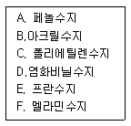
- A, B, E
- A, C, D
- B, C, D
- B, C, E
(정답률: 60%)
5과목: 건축일반
81. 다음은 건축관계법령에 따른 주요구조부를 내화구조로 하여야 하는 건축물에 대한 사항이다. ( )안에 들어갈 내용으로 옳은 것은?
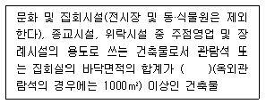
- 100m2
- 150m2
- 200m2
- 300m2
(정답률: 52%)
82. 건축법 시행령 제46조(방화구획 등의 설치)에서 방화구획의 규정을 완화하여 적용할 수 있는 부분이 아닌 것은?
- 단독주택
- 복층형 공동주택의 세대별 층간 바닥부분
- 주요구조부가 내화구조 또는 불연재료로 된 주차장
- 교정 및 군사시설 중 군사시설로써 집회, 체육, 창고 등의 용도로 사용되는 시설을 제외한 나머지 시설물
(정답률: 55%)
83. 경량 철골조의 특성에 관한 설명으로 옳지 않은 것은?
- 주택, 간이 창고 등 소규모의 구조물에 쓰인다.
- 비틀림에 대한 저항이 강관구조에 비해 강하다.
- 가공, 조립이 용이한 편이다.
- 경량철골재의 접합은 볼트접합, 용접접합으로 한다.
(정답률: 70%)
84. 기둥의 중간 부분이 가늘어 보이는 착시현상을 교정하기 위해 기둥을 약간 배부르게 처리하여 시각적으로 안정감을 부여하는 수법은?
- 콜로네이드(Colonade)
- 아케이드(Arcade)
- 니치(Niche)
- 엔타시스(Entasis)
(정답률: 60%)
85. 한국 전통건축으로 지어진 주거건물에서 마루를 구성하는 부채와 가장 거리가 먼 것은?
- 머름
- 장귀틀
- 사래
- 청판
(정답률: 42%)
86. 벽돌구조에서 치장줄눈의 줄눈형태별 의장효과에 관한 설명으로 옳은 것은?
- 민줄눈은 질감을 깨끗하게 연출할 수 있으며 일반적으로 사용되는 줄눈이다.
- 평줄눈은 면이 깨끗한 벽돌일 때 사용하며 약한 음영표시 및 여성적 느낌을 연출할 수 있다.
- 빗줄눈은 벽돌의 형태가 고르고 줄눈의 효과를 확실히 할 때 사용된다.
- 내민줄눈은 순하고 부드러운 여성적인 선의 흐름을 연출할 때 사용되는 줄눈이다.
(정답률: 53%)
87. 6층 이상의 거실 면적의 합계가 9000m2 이상인 의료시설의 승용승강기 설치 대수의 최소 기준으로 옳은 것은? (단, 8인승 이상 15인승 이하의 승강기를 기준으로 한다.)
- 2대 이상
- 3대 이상
- 4대 이상
- 5대 이상
(정답률: 32%)
88. 소방청장, 소방본부장 또는 소방서장은 소방특별조사를 하려면 몇 일 전에 관계인에게 조사대상, 조사기간 및 조사사유 등을 서면으로 알려야 하는가?
- 5일 전
- 7일 전
- 10일 전
- 15일 전
(정답률: 73%)
89. 한식 목조지붕틀에서 종보 또는 들보위에 세워 마룻대를 받는 부재는?
- 개판
- 우미량
- 대공
- 서까래
(정답률: 50%)
90. 건축물에 설치하는 방화벽의 구조에 관한 기준으로 옳지 않은 것은?
- 내화구조로서 홀로 설 수 있는 구조일 것
- 방화벽에 설치하는 출입문의 너비 및 높이는 각각 2.5m 이하로 할 것
- 방화벽에 설치하는 해당 출입문에는 을종방화문을 설치할 것
- 방화벽의 양쪽 끝과 위쪽 끝을 건축물의 외벽면 및 지붕면으로부터 0.5m 이상 튀어나오게 할 것
(정답률: 72%)
91. 특정소방대상물에 설치된 축전지실∙통신기기실∙전산실 등에 설치하여야 하는 소화설비는? (단, 바닥면적이 300m2이상인 것)
- 물분무등소화설비
- 스프링클러설비
- 수동식소화기
- 옥내소화전설비
(정답률: 41%)
92. 공동주택 중 아파트로서 4층 이상인 층의 각 세대가 2개 이상의 직통계단을 사용할 수 없는 경우에는 발코니에 인접 세대와 공동으로 또는 각 세대별로 일정 요건을 모두 갖춘 대피공간을 하나 이상 설치하여야 하는데 이 요건에 관한 설명으로 옳지 않은 것은?
- 대피공간은 실내의 다른 부분과 방화구획으로 구획될 것
- 대피공간의 바닥면적은 인접 세대와 공동으로 설치하는 경우에는 4m2 이상일 것
- 대피공간의 바닥면적은 각 세대별로 설치하는 경우에 는 2m2 이상일 것
- 대피공간은 바깥의 공기와 접할 것
(정답률: 52%)
93. 방염성능기준 이상의 실내장식물 등을 설치하여야하는 특정소방대상물에 속하지 않는 것은?
- 층수가 10층인 아파트
- 방송통신시설 중 방송국 및 촬영소
- 근린생활시설 중 체력단련장
- 의료시설 중 종합병원
(정답률: 72%)
94. 비상용승강기를 설치하지 아니할 수 있는 건축물의 기준으로 옳지 않은 것은?
- 높이 31m를 넘는 각층을 거실외의 용도로 쓰는 건축물
- 높이 31m를 넘는 각층의 바닥면적의 합계가 500m2이하인 건축물
- 높이 31m를 넘는 층수가 4개층 이하로서 당해 각층의 바닥면적의 합계 200m2이내마다 방화구획으로 구획한 건축물
- 높이 31m를 넘는 층수가 4개층 이하로서 당해 각층의 바닥면적의 합계 400m2(벽 및 반자가 실내에 접하는 부분의 마감을 불연재료로 한 경우)이내마다 방화구획으로 구획한 건축물
(정답률: 41%)
95. 한 켜는 길이쌓기로 하고 다음은 마구리쌓기로 하며 모서리 또는 끝에 칠오토막을 써서 마무리하는 벽돌쌓기법은?
- 영식쌓기
- 화란식쌓기
- 영롱쌓기
- 미식쌓기
(정답률: 57%)
96. 옥내소화전 설비를 설치하여야 하는 특정소방대상물의 연면적 최소 기준으로 옳은 것은?(단, 지하가 중 터널은 제외)
- 1000m2 이상
- 3000m2 이상
- 6000m2 이상
- 10000m2 이상
(정답률: 60%)
97. 소방시설법령에서 규정한 소화활동설비에 속하지 않는 것은?
- 제연설비
- 연결송수관설비
- 비상콘센트설비
- 자동화재탐지설비
(정답률: 54%)
98. 환기를 위하여 거실에 설치하는 창문등의 최소면적으로 옳은 것은? (단, 거실의 바닥면적은 300m2이며, 기계환기장치 및 중앙관리방식의 공기조화설비를 설치하지 않은 경우)
- 10m2
- 15m2
- 25m2
- 30m2
(정답률: 62%)
99. 소방시설법령에서 정의하고 있는 「무장층」을 구성하는 개구부의 최소 요건에 해당되지 않는 것은?
- 크기는 지름 60cm 이상의 원이 내접할 수 있는 크기일 것
- 해당 층의 바닥면으로부터 개구부 밑부분까지의 높이가 1.2m 이내일 것
- 내부 또는 외부에서 쉽게 부수거나 열 수 있을 것
- 도로 또는 차량이 진입할 수 있는 빈터를 향할 것
(정답률: 59%)
100. 건축허가 등을 할 때 미리 소방본부장 또는 소방서장의 동의를 받아야 하는 건축물의 최소 연면적 기준으로 옳은 것은?
- 400m2 이상
- 500m2 이상
- 600m2 이상
- 700m2 이상
(정답률: 52%)
6과목: 건축환경
101. 다음 설명에 알맞은 보일러의 출력은?
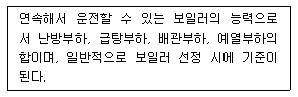
- 상용출력
- 정격출력
- 정미출력
- 괴부하출력
(정답률: 49%)
102. 다음 중 주광률의 정의로 가장 알맞은 것은?
- 창면적에 대한 실내바닥면적의 비율(%)
- 전천공조도에 대한 실내 한 지점의 작업면조도의 비율(%)
- 한 실의 전체 조도에 대한 자연광에 의한 조도의 비율(%)
- 인공광에 의한 조도에 대한 자연광에 의한 조도의 비율(%)
(정답률: 38%)
103. 다음의 공기조화방식 중 전공기 방식(all airsystem)에 속하지 않는 것은?
- 단일덕트방식
- 2중덕트방식
- 멀티존 유닛방식
- 팬코일 유닛방식
(정답률: 59%)
104. 국소식 급탕방식에 관한 설명으로 옳지 않은 것은?
- 급탕개소마다 가열기의 설치 스페이스가 필요하다.
- 급탕개소가 적은 비교적 소규모의 건물에 채용된다.
- 급탕배관의 길이가 길어 배관으로부터의 열손실이 크다.
- 용도에 따라 필요한 개소에서 필요한 온도의 탕을 비교적 간단하게 얻을 수 있다.
(정답률: 66%)
1⑤. 다음 중 배수 트랩 내의 봉수파괴 원인과 가장 관계가 먼 것은?
- 증발 현상
- 모세관 현상
- 서어징 현상
- 자기사이펀 작용
(정답률: 45%)
106. 다음 설명에 알맞은 건축화조명방식은?
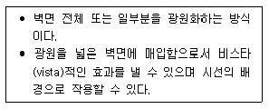
- 코브조명
- 광창조명
- 코퍼조명
- 광천장조명
(정답률: 61%)
107. 건물의 단열재는 흡습성이 없는 것이 바람직한데, 다음 중 그 이유로 가장 알맞은 것은?
- 단열재에 수분이 침투하면 시공이 불편하기 때문에
- 단열재에 수분이 침투하면 단열재가 팽창하기 때문에
- 단열재에 수분이 침투하면 열전도율이 크게 증가하기 때문에
- 단열재에 수분이 침투하면 열교현상이 발생하지 않기 때문에
(정답률: 61%)
108. 터보형 펌프에 속하지 않는 것은?
- 터빈 펌프
- 사류 펌프
- 볼류트 펌프
- 피스톤 펌프
(정답률: 48%)
109. 건축물의 에너지절약을 위한 계획 내용으로 옳지 않은 것은?
- 건축물은 남향 또는 남동향 배치를 한다.
- 공동주택은 인동간격을 넓게 하여 저층부의 일사 수열량을 증대시킨다.
- 건축물의 체적에 대한 외피면적의 비 또는 연면적에 대한 외피면적의 비는 가능한 크게한다.
- 거실의 충고 및 반자 높이는 실의 용도와 기능에 지장을 주지 않는 범위 내에서 가능한 낮게 한다.
(정답률: 66%)
110. 다음 중 실내의 조명설계 순서에서 가장 먼저 이루어져야 할 사항은?
- 소요조도 결정
- 조명가구 배치
- 조명방식 결정
- 소요전등수 결정
(정답률: 73%)
111. 다음과 같은 조건에서 재실인원이 60명인 강의실의 필요 환기량은?
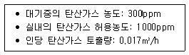
- 약 665m3/h
- 약 845m3/h
- 약 1085m3/h
- 약 1460m3/h
(정답률: 35%)
112. 천창채광에 관한 설명으로 옳지 않은 것은?
- 비막이에 불리하다.
- 조도 분포의 균일화에 유리하다.
- 측창채광에 비해 채광량이 적다.
- 근린의 상황에 따라 채광을 방해받는 경우가 적다.
(정답률: 70%)
113. 상대습도를 높였을 때 나타나는 습공기의 상태변화로 옳은 것은? (단, 건구온도는 일정하다.)
- 노점온도가 높아진다.
- 습구온도가 낮아진다.
- 절대습도가 작아진다.
- 엔탈피가 낮아진다.
(정답률: 45%)
114. 중량 건축물일수록 시간지체(time-lag) 현상이 커지는데, 이를 평가하기 위한 척도는?
- 열용량
- 열전도율
- 등가온도
- 표면복사율
(정답률: 42%)
115. 다음과 같이 구성된 구조체에서 1m2당 관류열량은? (단, 실내온도 25°C, 외기온도 10°C, 내표면 열전달률 8W/m2, 외표면 열전달률 20W/m2∙K 이다.)
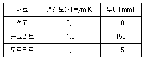
- 15.66W
- 21.36W
- 25.36W
- 37.13W
(정답률: 20%)
116. 조명용어와 사용단위의 연결이 옳은 것은?
- 광속 - 루멘[lm]
- 조도 - 칸델라[cd]
- 휘도 -럭스[lx]
- 광도 - 데시벨[dB]
(정답률: 51%)
117. 음의 크기 레벨 산정에 기준이 되는 순음의 주파수는?
- 10Hz
- 100Hz
- 500Hz
- 1000Hz
(정답률: 47%)
118. 다음과 같이 정의되는 소음의 종류는?
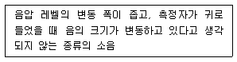
- 정상소음
- 간헐소음
- 변동소음
- 충격소음
(정답률: 70%)
119. 자연환기에 관한 설명으로 옳지 않은 것은?
- 중력환기는 공기의 밀도차가 원동력이 된다.
- 실내외 온도차가 클수록 중력환기량은 증가한다.
- 실외의 풍속은 풍력환기량에 영향을 미치지 않는다.
- 개구부의 중력환기량은 개구부의 단면적에 비례한다.
(정답률: 73%)
120. 잔향시간에 관한 설명으로 옳지 않은 것은?
- 잔향시간은 실용적에 영향을 받는다.
- 잔향시간은 실의 흡음력에 반비례한다.
- 잔향시간이 길수록 명료도는 좋아진다.
- 적정잔향시간은 실의 용도에 따라 결정된다.
(정답률: 73%)